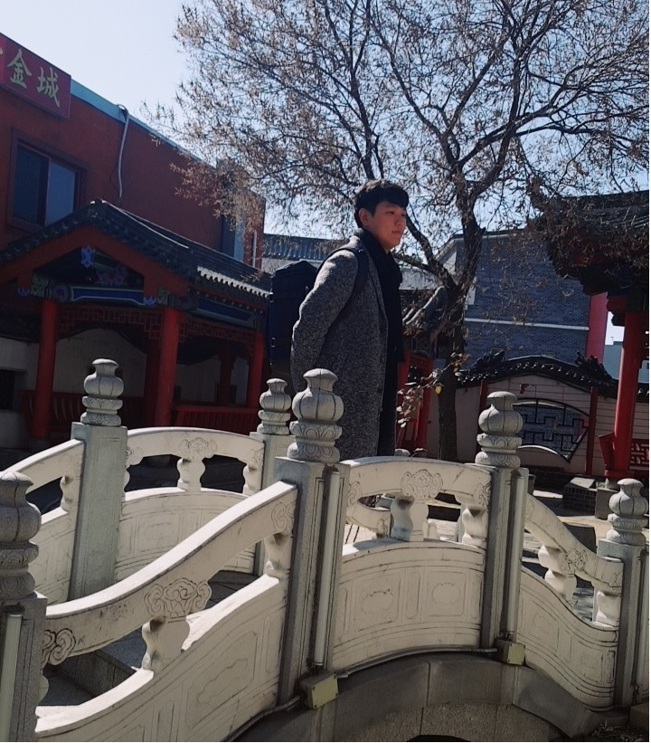

Main Introduction
| Title | Description |
|---|---|
| Name | Kim Jae Won |
| Date of Birth | 1993.06.18 |
| School | Sogang University / Korea |
| Major | Business Administration / Software |
| Currently living / Hometown | Seoul Kangseogu / Busan Haeundae |

| Title | Description |
|---|---|
| Name | Kim Jae Won |
| Date of Birth | 1993.06.18 |
| School | Sogang University / Korea |
| Major | Business Administration / Software |
| Currently living / Hometown | Seoul Kangseogu / Busan Haeundae |
2016.12.01: "Started learning about Computer Science and software"
2017.03.01: "Started a new campaign called Fruits Inside"
2017.03.17: "Be a member of LikeLion in Sogang University.


My favorites can be divided into three main parts.
I like to taste and make different kinds of coffee. By using many kinds of coffee beans roasted in different countries.
I like listening to ballad and R&B music. I also like to sing songs to get rid of my accumulated stresses.
I learned tennis about a year when I was 10. I started racquet ball which is very similar to tennis in my university years. I enjoy playing it! It makes me healthier!